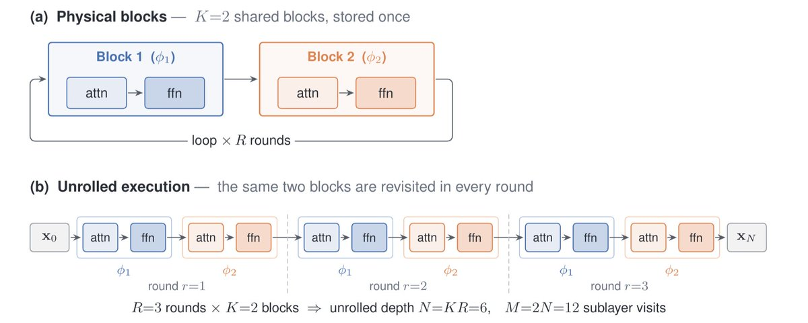
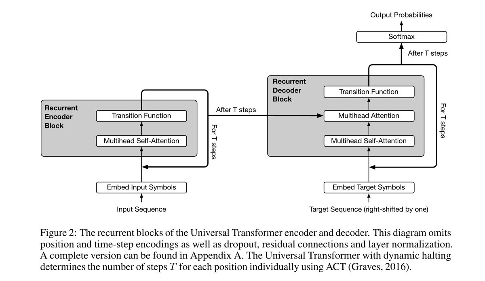
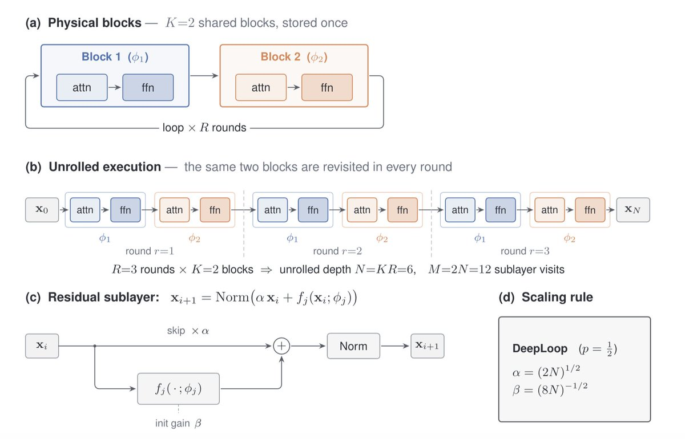

让LLM变聪明通常有两条路：一是给更多参数（更大的大脑），二是给更多计算/数据来训练（更长的教育）。两条路都有效，但都很昂贵。一切研究的终极动机是在资源约束下最大化目标。 从这个角度看，我们更该追逐第三种选择：重复使用已有的参数，而不是买新的。这个想法催生了Looped Transformer。
Looped Transformer截取模型的一段，以循环方式多次处理同一输入，使每次迭代多一次“思考”机会，类似反复精读同一段落。若该思路成立，则可在仅存储小模型权重的条件下，获得远超其参数规模的智能收益。 以训练25层并循环4次替代训练100层，前向延迟与FLOPs基本持平，而参数量缩减至1/4。实际训练所得权重具有多态性：同一组权重可递归地迭代自身历史输出。

最常被引用的Looped Transformer论文是2018 ICLR的Universal Transformer。它不是堆叠N个不同的层，而是用一个共享的过渡函数在时间步上循环应用。不再是「层1 → 层2 → ... → 层N」，而是迭代式地并行精化每个位置的表示，每次循环都用同一组权重。

UT后来被称为所有现代循环/递归深度语言模型的直接架构祖先。但它当时为什么没有成为更大的事件？有五个原因：
1. 计算vs参数权衡当时不被理解。 在N倍计算增长下，直接将模型规模扩大N倍通常优于循环N次。2018年缩放定律还没发表，领域缺乏框架来问「每FLOP是循环计算更有价值还是参数计算更有价值？」UT在参数数量匹配而非训练计算匹配下评估，美化了循环（视循环步骤为“免费”参数），掩盖了真实计算开销。
2. 时机不对。 UT恰好在领域进入「规模就是一切」时代时发表。BERT、GPT-2、GPT-3演示了原始可并行化Transformer的暴力参数和数据缩放能带来巨大、可预测的收益。而循环深度本质上是串行的：步骤t+1须等待步骤t完成。
3. 基础设施没准备好。
4. 增益不够戏剧性。 UT更偏向学术探索而非工业级规模，小规模结果不足以驱动范式迁移。且UT只测试了密集架构，现代LT利用了7年更多研究的积累（MoE、稀疏注意力、DSA、CSA）。UT采用encoder-decoder架构，而当前主流LM均为decoder-only。
5. 计算资源和资金不同。 2026年的GPU远超2019年，投资者也更愿意投资前沿AI研究。
Universal Transformer的核心思想是：重复应用同一个self-attention + transition块，并行精化每个token的表示，用per-token halting决定何时结束。现代Looped Transformer保留权重共享核心，但围绕decoder-only、十亿至万亿参数级因果语言模型的需求全面重构了其余设计。

不再是整个网络循环，现代实现将网络分为三个功能组：Prelude（少量非循环层，将原始token映射至隐空间）、Core循环块（重复应用，接收上一轮隐状态与嵌入输入，输出新隐状态）、Coda（少量非循环层加LM头，将最终隐状态解码为token概率）。
数十次循环迭代的反向传播开销高昂，实践中通常采用截断反向传播：梯度仅经由最近的随机迭代子集回传，而非完整展开链。
这是与UT最重要的区别。Universal Transformer使用ACT（自适应计算时间）：学到每个token的停机概率，逐个符号决定何时停止精化。现代循环LLM基本放弃该策略，改用更简洁且可扩展的方式：训练时随机采样循环次数r（而非显式学习停止概率）。 该策略使模型对推理时任意展开深度均具鲁棒性，因此测试时可将r作为旋钮直接权衡计算与质量。更多迭代通常意味着更好的推理，但边际收益递减。
如果你把模型循环N次，训练计算近似乘以N倍。循环不是免费的。在固定预算下，已有工作表明普通Transformer扩大N倍通常优于将小模型循环N次。这个领域的挑战就是克服这个约束。
MoEUT（2024）：循环细粒度专家组而不是单个密集块，融合权重共享与MoE容量。
Relaxed Recursive Transformers（2024）：保留共享重复块，但逐步附加LoRA适配器，以补偿严格权重共享带来的表达能力损失。
Mixture-of-Recursions (MoR, 2025)：每个token路由到动态学习的递归步数：简单token少循环，困难token多循环。
DeepLoop（2026）：修复训练稳定性缺陷：标准DeepNorm缩放假设层间独立，而循环模型跨迭代共享权重，DeepLoop引入循环感知的更强缩放指数。
Loopie（2026）：通过正确配方（层循环+半存储深度+计算重投入MoE骨干），首次在等计算量下使循环模型超越普通Transformer。Loopie还改变了循环位置：不是循环整个多层栈，而是逐层循环（每个层循环多次才进入下一层），即「A A A B B B C C C」而非「A B C A B C A B C」。
参考：https://x.com/neural_avb/status/2081741935883223196